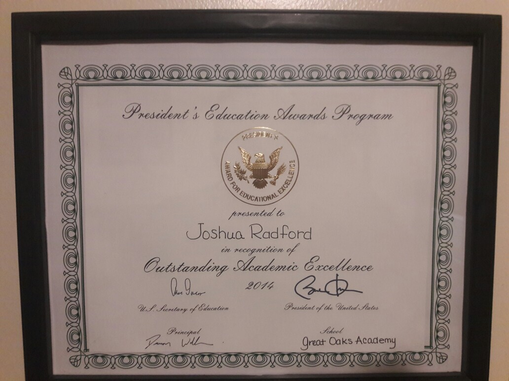

For elementary school I went to GOA (Great Oaks Academy). For middle school, I stayed at GOA for two years, and spent my final year of middle school at CMS (Chatterton Middle School). I currently go to high school at CHS (Cousino High School), and I will be graduating in 2020.
For awards and accomplishments, I don't have many physical things. Like most students, I've been on the honor role, but I have a signed Certificate of Academic Excellence by our 44th president, Barack Obama. 5/10 years after highschool, my goal is to have a good job and either be going to school or being an intern in software development, or learning / practicing a trade like plumbing or electrical work.